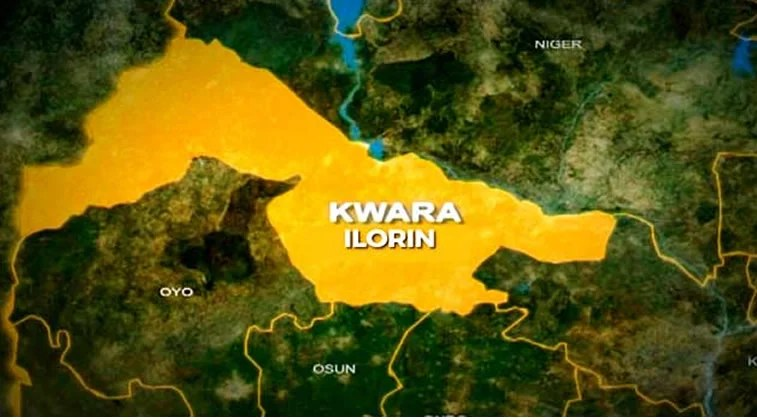

Firefighters recover man’s body from Kwara river

The Kwara State Fire Service recovered the body of an unidentified man from a river near Royal Valley Bridge in the Kulende area of Ilorin on Tuesday. The man was estimated to be about 50 years old.
A passerby who saw the body floating in the river alerted a radio station, which then contacted the fire service. Firefighters mobilised to the scene at 3:44 pm and carried out the recovery operation.
The body was handed over to SUP Abdulganiu Garuba of the E-Division Police Station in Kulende for further action. The fire service said the circumstances of the incident and the cause of death had not been established, and that further investigation was expected to clarify what happened.
Chief Fire Officer Alabi Muhammed praised the passerby for reporting the discovery and the radio station for relaying the information to emergency responders. He urged residents to report emergencies and suspicious incidents promptly to the relevant authorities.
Source: Punch